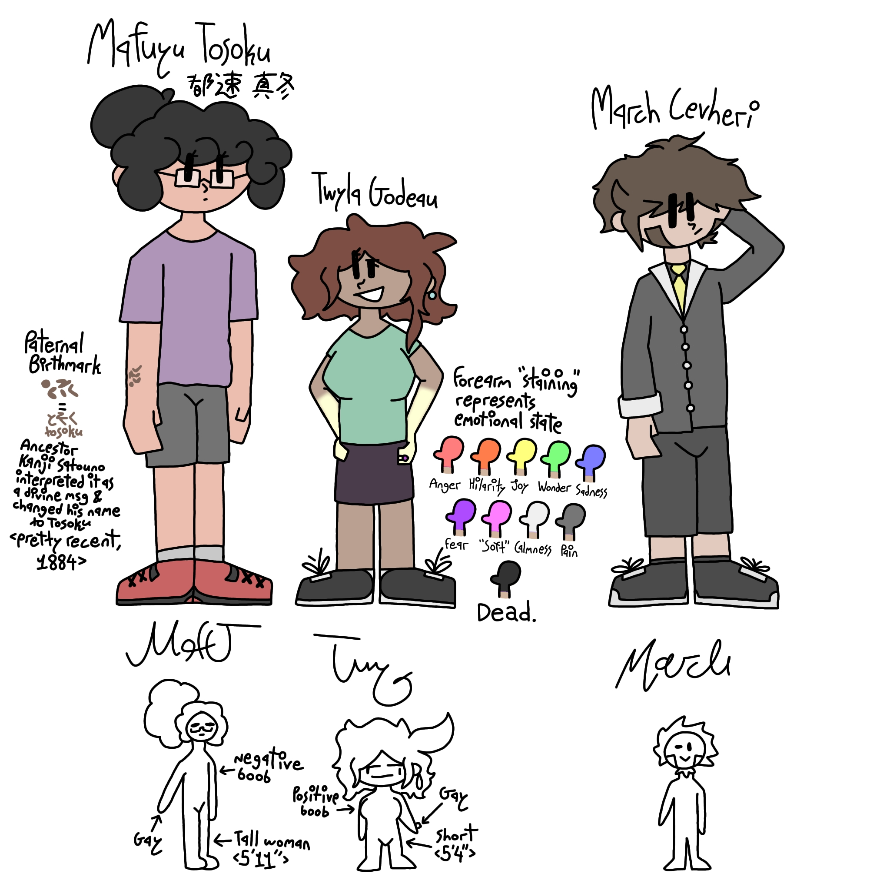

While I unfortunately don't know the exact date I started writing CO-WRITERS, I would say the first couple of drafts came to be in around late March at the earliest, but more likely around April 10th, of 2026. I was just running in P.E., doing our usual couple laps. For a bit of context, I had a story before this that remains unnamed, but I've taken it to calling it HIMSON (due to where it takes place). I was still writing HIMSON, but I had reached a point in the story where I was bloating it way too much. I started writing a whole side story for a character who probably wasn't gonna get more than five minutes worth of "screen time," and it hindered my writing pace a lot. This had happened before multiple times, and is an unfortunate pattern in my writing.
However, while running, I had a random story idea, like I often do. But this one got me excited. A Narrator, who gets bored of narrating over crappy shows and romcoms, decides It wants to be human, but because It doesn't know how to, It gives consciousness to a random, nameless background characterand tells her what It wants to do, hoping that It can achieve It's desires through this human. However, the human, who has chosen the name Taylor for herself, decided that she didn't want to go along with the Narrator's demands, and she had her own list of desires and things she wanted to do, many things that conflicted with what the Narrator wanted. The early story would primarily focus on Taylor grappling with the fact that she was barely anything more than a playtoy, but still wanting a normal, peaceful life, one that contrasted with the high-action, constantly moving one the Narrator wished for. The first ever scene also took place in a mall on an escalator, for some reason.
While this original idea has been completely expanded upon and is much more complicated than it used to be, this basic idea of two contrasting minds wrestling over different things has stayed almost entirely consistent throughout CO-WRITERS' lifepsan. Although most of the remnants from the old first drafts now mostly only shine through in the beginning of the current CO-WRITERS, as around midway through do new themes and relationships appear that reach beyond just "these two don't agree." But although that very first version may be very much gone, I can still remember it quite well, and I can especially remember how excited I was to get home and open Google Docs.

In case you already forgot (which I don't blame you for doing), HIMSON was the story I was committed to before CO-WRITERS. To summarize it, it was a story loosely based on the world of Blade & Sorcery, but with a more modern integration into society. Like if everyone in Visalia had magic but it was just another normal thing. I mean, imbuements (the proper word for person-specific magic) in the story are treated like a mix of mental disorders (without the ableism) and blood types. The main story focused on Mafuyu "Maff" Tosoku (都速 真冬), a college-level imbuement professor, and her fiancée Twyla "Twy" Godeau, their experiences with the weird, and sometimes dangerous people of the city, and them falling victim to the remnants of a now-defunct criminal organization. Now, that concept sounds fine and dandy, right? It does! Unfortunately, the story got super bloated super quickly. I started focusing on smaller characters associated with the organization, survivors, targets... Basically anyone that wasn't Maff or Twy, I spent more time focusing on, which was really bad. So bad that it started actually demotivating me from writing the story, as when I wanted to write parts of the main story, I would just get derailed and focus on someone or something else entirely, maybe not even related. It sucked. Hard.
Fast forward to mid to late April, and I'm actively focusing and expanding on the world of CO-WRITERS, while also trying to convince myself that I wasn't done with HIMSON yet. I wasn't, and I'm still not, but I clearly had one story in my mind a lot more than the other. Eventually, as I started backing all of my stories up to my personal account (everything up until this point was written on my school email's Docs account), I finally realized that I really was done with HIMSON and was pretty content leaving it where it was, unfinished. I finally stopped splitting my focus between two stories and set my focus on CO-WRITERS, where I finally learned how to manage how I focus on my different characters and storylines. Keep the amount of groups and people to a minimum. Do not constantly expand your roster unless the story NEEDS it. It helps. A LOT. And HIMSON honest to goodness helped me learn that.